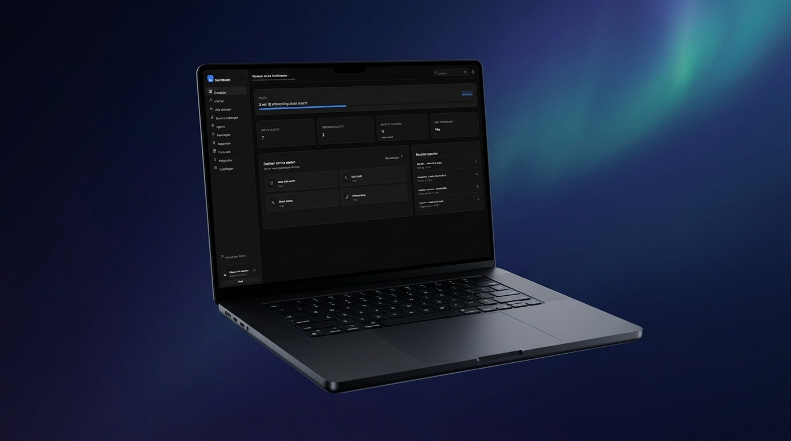
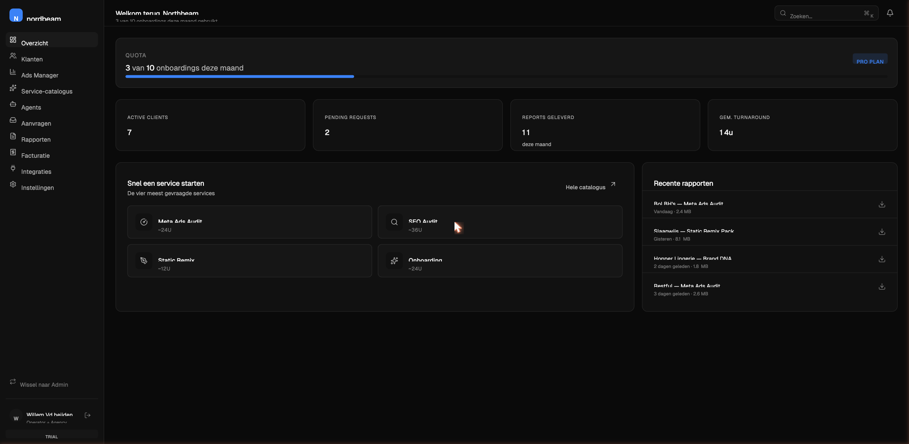
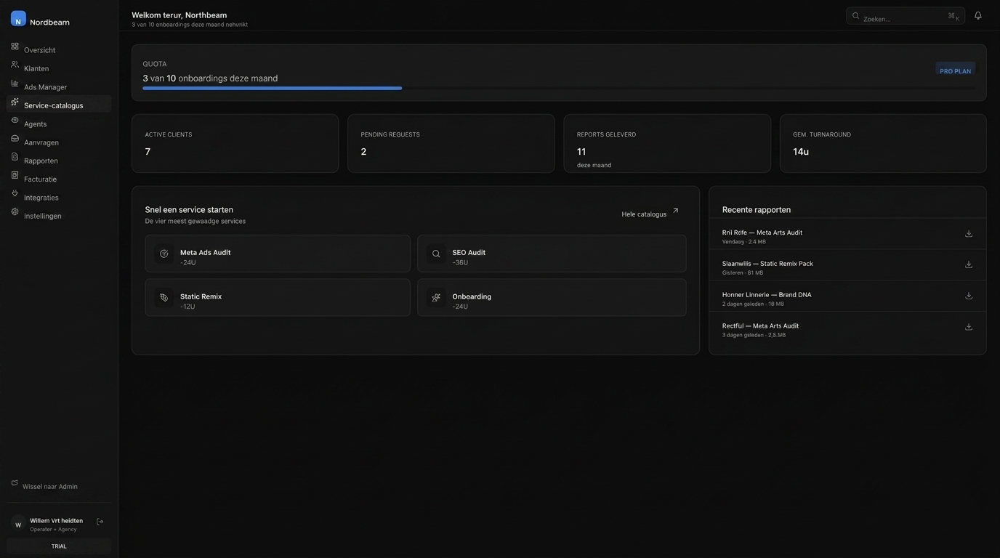
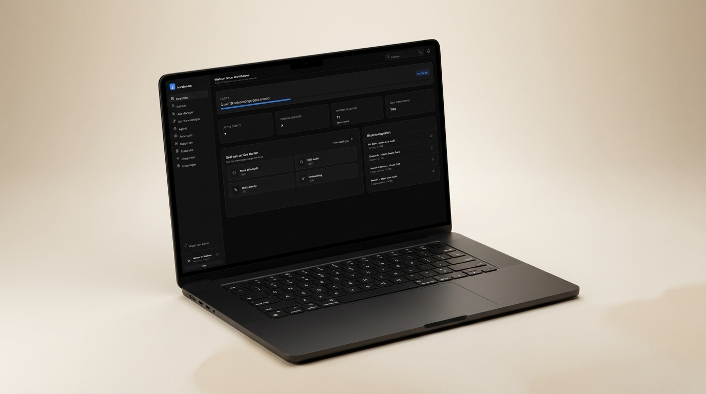
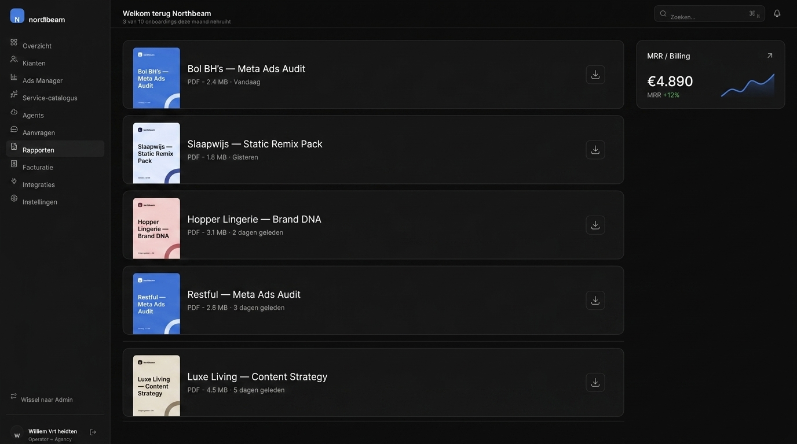
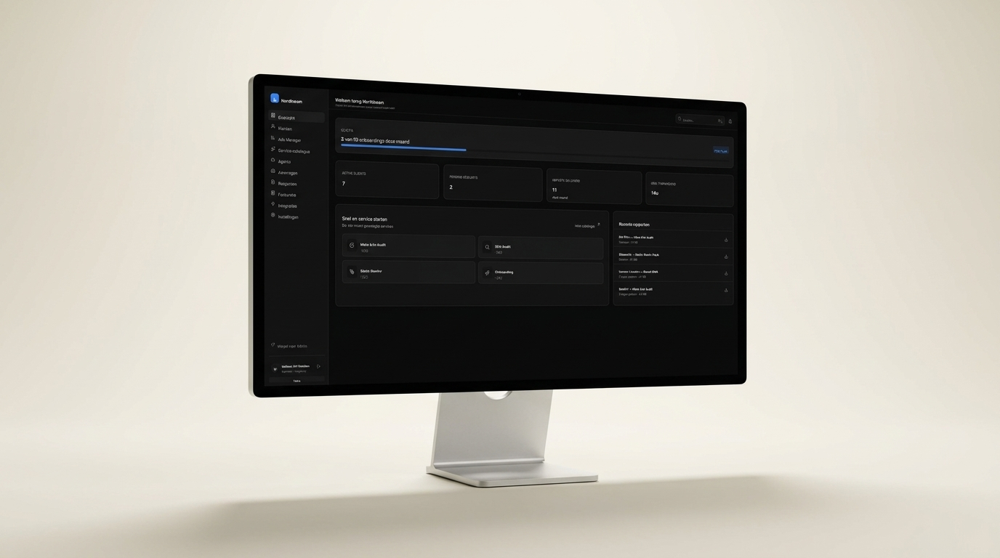

Het portaal dat je agency volwassen maakt.
Onboard klanten in 24 uur. Lever gebrande rapporten. Draai AI-skills op aanvraag. Alles wat een agency-owner dagelijks aanraakt — in vijf hoofdstukken.

Eén dashboard. Jouw hele klantenboek.
Bij login zie je direct hoe je agency draait: hoeveel onboardings dit kwartaal, hoeveel actieve clients, pending requests en geleverde rapporten. Elke klant heeft zijn eigen workspace met magic-link login, status, history en facturen.

Vaste prijs. Vaste turnaround. Geen e-mail-tennis.
Vier kerndiensten staan op de plank — Meta Audit, SEO Audit, Static Remix, Onboarding — met SLA's en deliverables vooraf vastgelegd. Klant bestelt vanuit z'n eigen workspace, jouw team krijgt een ticket in de queue, klant ziet de status real-time. Klaar.

AI-skills + multi-account Ads Manager onder één dak.
Acht agents draaien hier ook — gericht op agency-werk: audits voor klanten, briefs, win-back flows, wekelijkse anomaly-checks. De Ads Manager aggregeert Meta + Google over al je klanten, met alerting bij CPC-spikes en CVR-drops.

Gebrande deliverables. Stripe-billing eronder.
Elk rapport komt automatisch in jouw kleuren, jouw logo, jouw font. 11 rapporten geleverd deze maand, allemaal download-klaar. Eronder draait Stripe — per-klant subscriptions, eenmalige services, addons en credits.

White-label, integraties en multi-agency oversight.
Custom domein, jouw merk, jouw kleuren — de klant ziet nooit het achterliggende platform. Integraties met Meta, Google, Shopify, Klaviyo, Gorgias, Stripe en Slack zijn out-of-the-box. Voor jou als operator: een admin-view over alle agencies en klanten onder jouw account.

Een dag in een Agency Dashboard.
Korte cinematic shot: agency-operator in het portaal — van inbox naar deliverable.